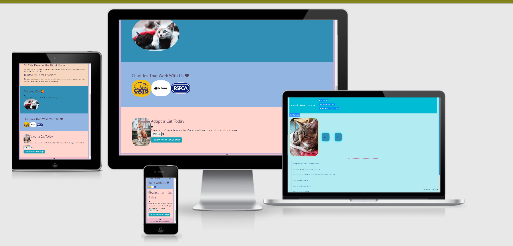

Mockups And Their Purpose
Primarily, I used mockups as a way to determine how I wanted the pages to be displayed in a more visual way. While the wireframes were more about the structure, the mockups presented a way to test how the pages would look. I didn't need to create many mockups in order to understand what I wanted (and, as a consequence, I am only sharing the two mockups as the others were only a variation of the ones shown below).
Mockups not only aided with the layout of the site, but also helped me make any changes in a more efficient manner as I would have a reliable indicator of what looked nice. I used Canva in order to create the two mockups below; it was a good tool as it allowed me to test what specific colours went well together.
Planning A Responsive Design
In order to prepare a more responsive design for my website, I used Am I Responsive in order to test how various pages would be displayed on different screens. This resource helped me determine how to display buttons and also gave me some confidence in terms of how accessible and user-friendly the site is (at least on a somewhat general level).
The images below serve as my mockups for the more responsive aspects of the site. During the process of building the layout, I would often return to Am I Responsive in order to see whether the site looked good on different displays.
